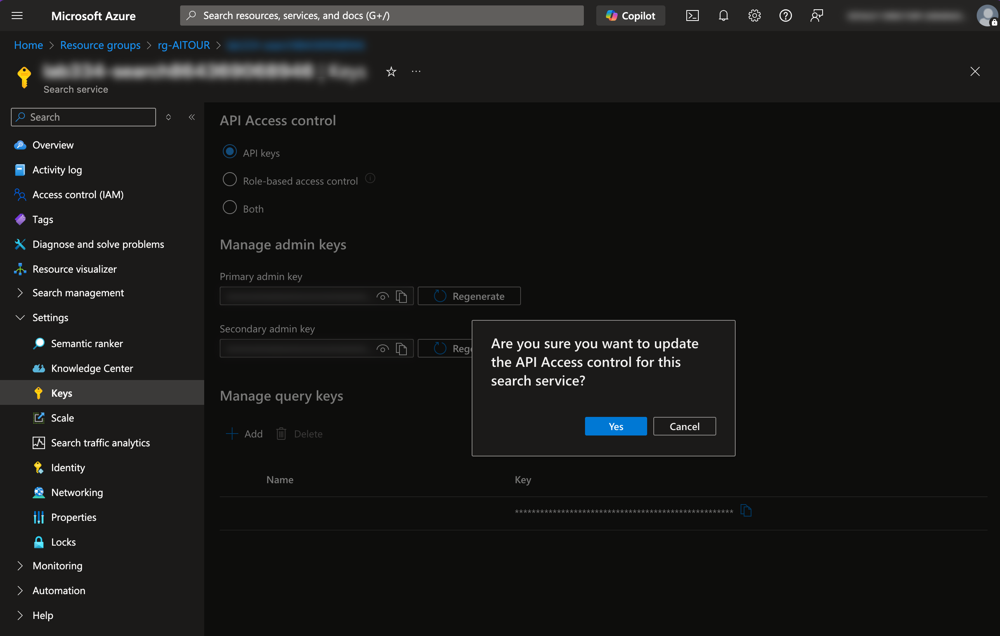

1. Dev Environment¶
By the end of this section you should have
- An Azure subscription provisioned with required resources
- A GitHub Codespaces environment configured with env variables
-
Validated both with a set of simple checks
-
DURATION:
- 5 mins (In-Venue) - uses pre-provisioned resources
- 20 mins (Self-Guided) - to also provision resources
Before You Begin¶
We designed this lab to be used at Microsoft Build (with a pre-provisioned Azure subscription) or at home (with your own Azure subscription). Just pick your path to get the right instructions.
ARE YOU A MICROSOFT BUILD ATTENDEE OR A SELF-GUIDED LEARNER?
- Yes, I am currently at Microsoft Build.
- I'll use a Skillable-provided Azure subscription**
- Yes, I am working on this at home.
- I'll be using my own Azure subscription**
1. Login with Azure CLI¶
You are currently running in a GitHub Codespaces environment. Let's authenticate to Azure so we can access resources from code.
-
Open the VS Code terminal and run this command - then follow instructions.
az login --use-device-code -
You will be prompted to enter Azure credentials (username and password). Use the right credentials as described below:
- Switch to the browser tab with the Skillable VM.
- Use the Azure credentials provided in the instructions panel there.
- Use your own Azure credentials to complete this login step.
Return to the VS Code terminal - you should be logged in successfully.
2. Setup Env Variables¶
Now, let's make sure our GitHub Codespaces environment can talk to these resources by setting the relevant environment variables. Return to the GitHub Codespaces tab now..
-
Run this command to create the
.envfilecp .env.sample .env -
Open the
.envfile created in the editor. It should look like this:# Azure Open AI AZURE_OPENAI_ENDPOINT= AZURE_OPENAI_API_KEY= AZURE_OPENAI_DEPLOYMENT="gpt-4o-mini" AZURE_OPENAI_API_VERSION="2025-01-01-preview" # Azure AI Foundry project AZURE_AI_CONNECTION_STRING= # Needed For Lab 0: Simulator AZURE_SEARCH_ENDPOINT= AZURE_SEARCH_API_KEY= AZURE_SEARCH_INDEX_NAME="contoso-products" # Needed For Lab 1 on: Evaluator LAB_CHAT_MODEL="gpt-4o-mini" LAB_JUDGE_MODEL="gpt-4"We'll fill these values in, next.
3. Configure Azure AI Project¶
Your Azure AI Foundry project is the main resource for developing and managing your generative AI application. Let's review it and configure our environment variables.
- Visit https://ai.azure.com - login with the same Azure account.
- You'll see a pre-provisioned Azure AI project listed - click it to get the page below.
- Now use the highlighted sections to populate .env.
- Set
AZURE_OPENAI_API_KEYin .env - to API key value - Set
AZURE_AI_CONNECTION_STRINGin .env - to Project connection string value - Select the
Azure OpenAItab under "Included capabilities" - Set
AZURE_OPENAI_ENDPOINTin .env - to Azure OpenAI endpoint value
- Set
- Visit https://ai.azure.com - login with the same Azure account.
- You will see a Create project button - with no pre-existing projects.
- Create a new Azure AI project using a tutorial like this.
- Deploy 3 models (
gpt-4o-mini,gpt-4, andtext-embedding-ada-002) - Add an Azure AI Search service resource (during setup, for convenience)
-
The created project overview looks like this. Leave this tab open - we'll use it later
4. Configure Azure AI Search¶
We use Azure AI Search indexes for simulating datasets, and exploring manual evaluation in the portal. To support this, we need to allow both types of API access. Let's do that, next.
- Open a new browser tab - visit https://portal.azure.com/#browse/resourcegroups
- Login with the same Azure account - click the
rg-AITOURentry to get the list of resources - Click the Search service resource - click Settings then Keys in sidebar
-
In the API Access Control page below - click Both, then confirm "Yes" in pop-up

-
Now let's populate related .env variables
- Set
AZURE_SEARCH_API_KEYin .env - to "Primary Key" from this page - Switch to the Overview page for the Search service to see details
- Set
AZURE_SEARCH_ENDPOINTin .env - to "Url" value (top right)
- Set
Your environment variables are set!